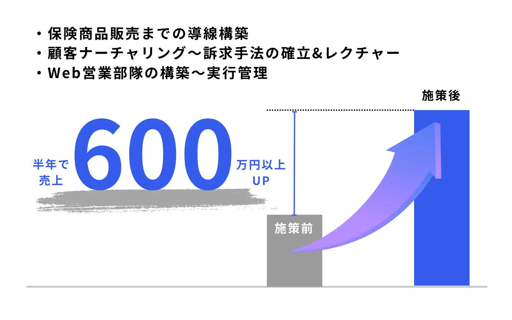

この記事でわかること
- マーケティング顧問おすすめ6社の比較表（料金・支援内容・対象外の作業・契約期間）
- 6社それぞれの特徴・向いているケース・注意点（公式サイトのリンク付き）
- 顧問と広告代理店・CMO代行・制作会社の役割の違い
- 料金の見方と、料金差が生まれる3つの要因（出典付き）
- 契約期間・中途解約で確認すべき点
- 依頼前に確認する7項目と、自社の状況別の選び方
マーケティング顧問とは？広告代理店・コンサルとの線引き
結論から言うと、マーケティング顧問は「判断を支える人」であり、「手を動かす人」ではありません。月1回〜週1回の定例で数値と施策をレビューし、何を優先し何をやめるかを一緒に決める。これが顧問契約の中心です。広告の入稿、LPの制作、バナーやSNS投稿の制作といった実作業は、顧問料とは別の契約（または別の会社）になるのが一般的です。
ここを曖昧にしたまま比較すると、「顧問を頼んだのに何も作ってくれない」「代行だと思っていたら助言だけだった」というズレが起きます。今回の比較でも、会社ごとに顧問料に何が含まれ、何が含まれないかを軸に整理しました。
| 依頼先のタイプ | 主な役割 | 顧問料に含まれにくいもの |
|---|---|---|
| マーケティング顧問 | 戦略・KPI・優先順位の判断支援、定例レビュー | 広告運用やLP制作などの実作業 |
| 広告代理店・運用代行 | 広告の入稿・運用・レポート | 事業全体の優先順位づけ |
| CMO代行 | 社外のマーケ責任者として施策全体を統括 | 個別の制作実務 |
| 制作会社 | LP・サイト・バナーなどの制作 | 施策の取捨選択 |
顧問・CMO代行・広告代理店の違いはCMO代行と顧問の違い・費用相場｜依頼先4種の比較とマーケティング顧問と広告代理店の違いで詳しく整理しています。この記事では「顧問を頼むと決めたあと、どの会社に聞くか」に絞って進めます。
マーケティング顧問おすすめ6社の比較表
ここからは、料金や支援内容を公式ページで公開している顧問サービスを並べます。掲載しているのは、2026年10月8日時点で各社の公式ページを実際に開いて確認できた内容だけです。公開されていない項目は「公開なし」「記載なし」と書き、推測では埋めていません。順位は付けていません。掲載順は料金の下限が低い順で、当社は末尾に置いています。
比較の前に。「顧問」と名乗っていても、実態は研修型、コンサル型、実務込みの伴走型とさまざまです。月額の安さだけで並べると、含まれる作業量の違いを見落とします。表では「対象外・別料金の明記」の列を設けました。
| 会社（公式ページ） | 料金（公開値） | 支援内容 | 対象外・別料金の明記 | 契約期間 |
|---|---|---|---|---|
| KikkA株式会社 | 月額5万円〜（税別） | 月1回の社員向け研修（約2時間）、実務アドバイス、広告・SEO等の現状棚卸し、施策の優先順位設計、社長との個別相談、チャット相談 | 広告入稿、クリエイティブ制作、Webサイト制作、日々の運用代行は対象外と明記 | 最低期間の定めなし（3ヶ月以上を依頼と記載） |
| 株式会社バリューエージェント | 相談プラン月5万円／スタンダード月15万円／プレミアム月30万円（いずれも税抜・初期費用なし） | 戦略立案、解析、運用サポート、SEO・CV改善・サイト分析・広告チェック、担当者サポート、各種研修、広告代理店・制作会社への指示サポート。月1回のミーティング | 公開なし | 最低3ヶ月（全プラン共通） |
| 株式会社FlyEdge | 月額19.8万円〜（税込） | 毎月のオンライン定例、チャット相談（回数無制限）、Webマーケ戦略・広告・SEO・LPやサイトの制作改善へのアドバイス。進め方は「コーチング×強制行動」型 | 公開なし（助言の範囲が中心） | 記載なし |
| 株式会社グローカル | ライト月30万円〜／スタンダード月60万円〜／プレミアム月120万円〜 | 戦略策定、施策選定・実行、体制づくりまで伴走。定例は隔週1回／週1回／週2回。SEO・広告・SNS・動画・メール・ウェビナー・PR・UI/UX改善・ツール導入・外注業者の管理代行など | 公開なし | 記載なし |
| シェアボス | 戦略コンサルティング5万円〜／回、戦略コンサルティング＋実務支援100万円〜／月（税別） | 業界のトッププレイヤーを戦略コンサルとしてアサイン。複数人の同時アサインも可。登録人材はデジタル業界に特化 | 公開なし（要件ヒアリング後に見積もり） | 記載なし |
| LnX合同会社 （マーケティング顧問制度） |
アドバイザリー月8万円／グロース伴走月15万円／マーケティング責任者月30万円／CMO代行月50万円〜（個別設計）。税別想定 | 戦略・KPI設計、数値・施策レビュー、広告・SNS・LP・CRMの分析、月次改善レポート、社内担当者・外注先への指示。定例はオンライン（月1回／月2回） | 広告運用の実作業、LP・Web制作、バナー・動画制作、SNS投稿制作、撮影、大規模な計測環境構築は別途見積もり。広告費・制作費も別 | 原則3か月（1か月目に現状分析と方針設計） |
※ 各社の情報は2026年10月8日に公式ページを確認したものです。料金・支援範囲は改定される可能性があるため、発注前に必ず各社にご確認ください。税込・税別の表記は各社で異なります。順位付けは行っておらず、掲載順は料金の下限が低い順です。
当社の条件も、他社と同じ粒度で載せておきます。当社のマーケティング顧問制度は、代表が担当者に引き継がず直接支援する形で、料金は月8万円（アドバイザリープラン：月1回定例・数値と施策のレビュー・改善提案とチャット相談）、月15万円（グロース伴走プラン：月2回定例・KPIと施策設計・月次改善レポート）、月30万円（マーケティング責任者プラン：戦略策定・予算案設計・社内外への指示・経営陣への月次報告）の3段階で、いずれも税別想定です。最低契約期間は原則3か月で、1か月目に現状分析と方針設計、2か月目以降に実行と改善に入ります。他社の提案書や見積もりを並べた状態でのご相談も歓迎です。
噛み合わない領域も正直に書きます。当社の顧問料は戦略・数値分析・改善提案・施策設計・ディレクションまでで、広告運用の実作業やLP制作などは別見積もりです。実務まで丸ごと1社に任せたい場合、週2回といった高頻度の定例を求める場合、対面での常駐支援を求める場合は、上の表の他社のほうが条件に合う可能性があります。
6社それぞれの特徴を個別に見る
表だけでは、各社がどこまでを担当し、どこから先は別の手当てが要るのかまでは分かりません。ここからは1社ずつ、公式サイトで確認できた特徴・向いているケース・注意点を整理します。繰り返しになりますが順位ではありません。
KikkA株式会社
公式サイト：https://kikkallc.com/ ／ サービスページ：Webマーケティングコンサル｜顧問型伴走支援
今回の6社の中で、料金の下限が最も低く、同時に「やらないこと」を最もはっきり書いているのがこの会社です。月額5万円（税別）〜で、月1回の社員向けマーケティング研修（約2時間）を軸に、広告・SEOなどの現状棚卸し、施策の優先順位設計、社長との個別相談、チャット相談まで含みます。
対象外として、広告入稿・クリエイティブ制作・Webサイト制作・日々の運用代行を明記しています。つまり「現場担当者を育てて社内で回す」ための顧問です。最低契約期間の定めはないが3ヶ月以上の契約を依頼していること、愛知県・中部地方は基本的に対面、それ以外の地域は全国オンライン対応であることも公式ページに書かれています。
向いているケース：社内に担当者がいて、判断の軸と育成を外部に頼みたい。まず低めの月額で顧問を試したい。
注意点：実作業は別の手当てが必要です。担当者が不在の会社が「代わりに動いてもらう」目的で使うと、期待とのズレが出ます。
株式会社バリューエージェント
公式サイト：https://valueagent.co.jp/ ／ サービスページ：Webコンサルティング｜株式会社バリューエージェント
大阪府大阪市に拠点を置く会社で、3段階の料金（月5万円・15万円・30万円、税抜、初期費用なし）をすべて公開しています。最低契約期間は全プラン共通で3ヶ月。支援内容は戦略立案、解析、運用のサポートに加えて、SEO、コンバージョン改善、サイト分析、広告チェック、各種研修まで幅が広く、広告代理店や制作会社への指示サポートが含まれている点が目を引きます。
施策の流れは、データ共有、ヒアリング、現状分析、提案、施策実行、数値分析、月1回のミーティングの順です。対象は中小企業が中心で、大阪を中心に全国対応とされています。
向いているケース：すでに代理店や制作会社に外注していて、その提案の良し悪しを見てほしい。3段階の価格から選びたい。
注意点：ページ内の見出しとプラン一覧とで、月額の下限の表記が異なって見える箇所があります。見積もり時にどのプランが何を含むか書面で確認してください。
株式会社FlyEdge
公式サイト：https://fly-edge.co.jp/ ／ サービスページ：Webマーケティング顧問｜株式会社FlyEdge
月額19.8万円〜（税込）で、毎月のオンライン定例、回数無制限のチャット相談、Webマーケティング戦略・広告・SEO・LPやサイト制作改善へのアドバイスを受けられます。公式ページは顧問の進め方を「コーチング×強制行動」型と説明しており、助言だけで終わらせず、宿題を出して実行させる設計です。対象は中小企業の経営者とされています。
同社のトップページには、顧問のほかにWebマーケティング戦略コンサルティング、内製化支援、戦略型のホームページ・ランディングページ制作といったサービスも並んでいます。顧問から制作や内製化へ段階的に移ることも考えられますが、顧問料に含まれる範囲は助言が中心で、契約期間は顧問ページには記載がありません。
向いているケース：経営者が自分で意思決定したい。相談頻度を気にせずチャットで聞きたい。
注意点：契約期間と、制作を依頼する場合の費用は顧問ページでは確認できません。契約前に確認してください。
株式会社グローカル
公式サイト：https://www.glcl.co.jp/ ／ サービスページ：WEBマーケティング支援コンサルティング｜株式会社グローカル
中小企業向けに事業戦略、営業戦略、採用などの支援を並べている会社の、Webマーケティング領域のコンサルティングです。定例の頻度でプランが分かれているのが特徴で、ライトは月30万円〜（隔週1回）、スタンダードは月60万円〜（週1回）、プレミアムは月120万円〜（週2回）と公開されています。
対応領域はSEO、WEB広告、SNS、コンテンツ制作、動画、メール、ウェビナー、プレスリリース、UI/UX改善、顧客管理ツールの導入、営業資料作成、価格・商品の見直しまで広く、外注業者の管理も代行すると書かれています。戦略から体制づくりまで伴走し、専任担当者がいない企業や内製化に向けた体制づくりも想定しています。
向いているケース：高頻度で並走してほしい。マーケティングに加えて営業・価格設計まで一緒に見てほしい。
注意点：今回の6社の中では月額の水準が高く、契約期間と対象外の作業は公式ページで確認できませんでした。
シェアボス
公式サイト：https://shareboss.net/ ／ サービスページ：シェアボス（料金・サービス案内）
特定の1社の顧問というより、業界のトッププレイヤーを戦略コンサルとして案件ごとにアサインするプラットフォーム型のサービスです。料金は、戦略コンサルティングが5万円〜／回、戦略コンサルティング＋実務支援が100万円〜／月（税別）と公開されています。複数人を同時にアサインでき、登録人材はデジタル業界に特化していると説明されています。
料金は要件ヒアリングのあとに見積もり・提案する方式です。マーケティング以外にも、ブランディング、PR、UX、営業戦略、新規事業などのタグが付いており、マーケティング専業の顧問とは位置づけが異なる点には注意してください。
向いているケース：特定の業界・領域に詳しい人物を、スポットで1回から入れたい。
注意点：誰がアサインされるかで中身が変わります。契約期間は記載がなく、実務支援を含む月額は上の表の中で最も高い水準です。
LnX合同会社
公式サイト：https://lnx.co.jp/ ／ サービスページ：マーケティング顧問制度
当社です。他社と同じ粒度で書きます。特徴は、マーケティング会社の代表が担当者に引き継がず直接支援する点と、顧問を「戦略だけ」に閉じず、広告・SNS・LP・CRMの分析と、社内担当者や外注先への具体的な指示まで含める点です。代表は上場事業会社での人材紹介サービスのWebマーケティング責任者を経験しており、戦略から実行まで広く担当してきました。
料金は月8万円・15万円・30万円の3プランで、CMO代行は月50万円〜の個別設計です。広告費・制作費・ツール利用料などの実費は含まれず、成果や売上を保証するものではありません。実務そのものが必要な場合は、外注先の提案も可能です。
向いているケース：専任のマーケ責任者を置くほどの予算はないが、施策の優先順位と外注先への指示を任せたい。代理店・制作会社の提案を判断できる人が社内にいない。
注意点：支援社数や支援体制の大きさでは大手に及びません。実作業の代行、週2回以上の高頻度の定例、対面常駐は想定していません。他社の提案書や見積もりを並べた状態でのご相談も歓迎です。
「やること」より「やらないこと」で選ぶ
顧問選びで後悔が出やすいのは、料金ではなく「含まれない作業」の見落としです。公式ページで対象外を明記している会社は、確認できた範囲では今回の6社の中でKikkAと当社だけでした。ほかの会社は、含まれる作業は書いてあっても、含まれない作業は書かれていません。書かれていないことは、「含まれる」とも「含まれない」とも判断できません。
そこで、契約前に次の4つを必ず文面で確認してください。
- 広告の入稿・運用の実作業：顧問料に入るのか、別契約か
- LP・サイト・バナー・動画の制作：助言のみか、制作まで含むか
- 外注先への指示：顧問が代理店や制作会社に直接指示を出せるのか、助言のみか
- レポート：月次の資料を顧問側が作るのか、自社で作る数字をレビューするだけか
この4つが書面で埋まれば、月額の高い・安いの比較に意味が出てきます。顧問の業務範囲の境界線はマーケティング顧問は「戦略だけ」か「実行」もするのか？契約前に確認すべき業務範囲の境界線でも整理しています。
マーケティング顧問の料金の見方
他社のメディアで紹介されているWebマーケティングコンサルの料金体系は、月額固定型が月30万円〜100万円、成果報酬型が売上の10〜20%程度、時間単価型が1時間あたり1〜5万円とされています（出典：Webマーケティングコンサル会社おすすめ15選！失敗しない選び方｜CROCO）。別のメディアでは、Webコンサルティング全般の目安として月額15万〜100万円程度、スポット型は1回あたり1万〜10万円程度とされています（出典：Web（デジタル）マーケティングの料金相場はいくら？費用を公開している会社7選｜バリューエージェント）。
今回の6社の公開値は、月5万円から月120万円以上まで大きく開いています。差が出る主な理由は、次の3つです。
| 料金差の要因 | 安い側の例 | 高い側の例 |
|---|---|---|
| 定例の頻度 | 月1回 | 週1回〜週2回 |
| 実作業の有無 | 助言・研修が中心（実作業は対象外） | 実務支援や外注先管理まで含む |
| 担当者の位置づけ | 顧問の助言を現場が実行する前提 | 顧問が施策全体を統括し、指示まで行う |
広告費・制作費・ツール利用料などの実費は、顧問料とは別に発生するのが一般的です。顧問料だけで比べず、「顧問料＋実作業の外注費＋自社側の工数」で半年分を並べると、実際の負担が見えてきます。費用の内訳そのものはマーケティング顧問の費用相場と依頼できる業務範囲にまとめています。
契約期間と中途解約を確認する
契約期間は、公開されている会社だけでも差があります。バリューエージェントは全プラン最低3ヶ月、KikkAは定めなしだが3ヶ月以上を依頼、当社は原則3か月です。一方、FlyEdge・グローカル・シェアボスは、確認した範囲では顧問ページに契約期間の記載がありませんでした。
3か月前後が多いのは、1か月目に現状分析と方針設計を行い、実行して数字が動き始めるのが2か月目以降になるためです。期間の長さそのものより、確認したいのは次の点です。
- 最初の1か月で何が成果物として出るか（現状分析、方針、KPI設計など）
- 期間途中の解約条件と、最終月の扱い
- 期間満了後に自動更新されるか
成果の出ない施策をいつ止めるかを事前に決めておく方法は、成果の出ない施策はいつやめる？Webマーケティングの撤退基準と見直しサイクルの作り方も参考になります。
依頼前に確認する7項目
- 顧問料に含まれる作業と、対象外の作業：上で挙げた4点を文面で確認する
- 定例の頻度と形式：月1回か月2回か、オンラインか対面か、議事録は誰が作るか
- 担当者は誰か：契約した人が実際に話すのか、別の担当に引き継がれるのか
- 自社の業種・規模での支援経験：具体的にどの数字をどう動かしたかを聞く
- 最初の1か月の成果物：現状分析、KPI設計、優先順位表など、形に残るものがあるか
- 契約期間・解約条件・更新方法：最低期間と途中解約の可否
- 自社側に必要な工数：データ提供、定例への出席、施策の実行を誰がどれだけ負担するか
特に3番目は見落とされがちです。営業時に話していた人と、実際に定例に出る人が違うケースは珍しくありません。誰と話すのかは契約前に必ず確認してください。顧問選びの全般的な観点はマーケティング顧問の選び方｜確認すべき7項目でも解説しています。
自社の状況別に、どのタイプが合うか
6社を優劣ではなく「タイプ」で見ると、自社に合う方向が絞れます。次の表は、公式ページに書かれている内容から整理したものです。
| 自社の状況 | 合いやすいタイプ | 該当する会社（掲載順） |
|---|---|---|
| 社内に担当者がいて、育成と判断の軸が欲しい | 研修型・低価格の顧問 | KikkA、バリューエージェント |
| 代理店・制作会社の提案を見てほしい | 外注先への指示サポート付き | バリューエージェント、LnX |
| 経営者が壁打ち相手を求めている | チャット相談が厚い顧問 | FlyEdge |
| 高頻度で並走し、営業・価格も見てほしい | 週1〜週2回の伴走型 | グローカル |
| 特定領域の専門家をスポットで入れたい | 案件ごとのアサイン型 | シェアボス |
| 専任責任者はいないが、優先順位と外注先への指示を任せたい | 責任者代行型の顧問 | LnX |
1つの会社が複数の行に当てはまるのは、各社の提供範囲が重なるためです。最終的には同じ条件（自社の状況・目的・予算）を2〜3社に伝え、提案書の具体性を比べるのがもっとも確実です。事前に整理しておくと提案の精度が上がるので、Webマーケティング会社に相談する前に整理すべきこと｜チェックリスト付きも使ってみてください。
LnXの見解
顧問選びでいちばん大切なのは、「何を決めてもらい、何を自分たちで動かすか」を先に分けることだと考えています。顧問は施策を増やす人ではなく、やることを絞る人です。そのため、当社では最初の1か月に現状分析と方針設計を置き、優先順位を数字から決めたうえで実行に入ります。
当社が顧問契約として行った事例ではありませんが、判断の仕方がよく表れている支援実績があります。保険代理店のインフルエンサー集客で、成果ゼロの状態から、成果を「人数×1人あたり訴求回数×訴求CVR」にKPI分解し、報酬体系の見直しと訴求テンプレートの整備に絞って再設計しました。半年で売上600万円以上UPという結果です（成果報酬型の支援事例で、顧問契約の成果ではありません）。

顧問に期待していいのは、こうした「どこに手を打つか」の判断の質です。逆に、実作業の量を期待するなら、顧問ではなく運用代行や制作会社への依頼が合います。顧問を選ぶときは、価格表より先に、自社が決めきれずに止まっている論点は何かを書き出してみてください。その論点に答えられる会社が、候補になります。
よくある質問
Q マーケティング顧問と広告代理店は、どちらを先に頼むべきですか？
自社に何が足りないかで決まります。広告を出すこと自体が決まっていて運用の手が足りないなら代理店、そもそも何に投資するかが決まっていないなら顧問が先です。すでに代理店に依頼しているが提案を判断できない場合は、顧問を入れて提案をレビューしてもらう使い方もあります。
Q 月額5万円前後の顧問でも意味はありますか？
含まれる内容次第です。月1回の研修や相談が中心のプランは、社内に担当者がいて判断の軸を補いたい会社には向きますが、実作業までは含まれないのが一般的です。成果は事業や施策の実行状況に左右され、顧問料の金額で保証されるものではありません。何が含まれ、何が対象外かを書面で確認してから判断してください。
Q 顧問に広告運用やLP制作などの実作業まで頼めますか？
会社によります。顧問料とは別に実作業を見積もる会社もあれば、実作業は対象外と明記している会社もあります。当社の場合、広告運用の実作業やLP・Web制作は別見積もりです。顧問と実作業を別会社に分ける場合は、顧問が外注先に指示を出せる契約になっているかも確認してください。
Q 契約期間はどのくらいが妥当ですか？
公開情報を見る限り、最低3か月前後としている会社が複数あります。1か月目に現状分析と方針設計を行い、実行して数字が動き始めるのが2か月目以降になるためです。期間の長さより、最初の1か月の成果物、途中解約の条件、自動更新の有無を確認してください。
Q 社内にマーケティング担当者がいなくても依頼できますか？
依頼自体は可能ですが、顧問の種類によって向き不向きがあります。助言と研修が中心の顧問は、実行する担当者がいないと施策が進みません。担当者が不在の場合は、実行ディレクションや外注先の手配まで含む顧問か、実作業を別途依頼できる会社を選ぶ必要があります。
Q 複数社に見積もりを取るとき、何をそろえて伝えればいいですか？
現在の売上・集客チャネルごとの数字、月に使える広告費と顧問費の上限、社内の担当者の有無、直近で止まっている判断の3〜5個を、同じ文面で各社に伝えてください。条件をそろえることで、提案書の具体性と見積もりの内訳を同じ土俵で比べられます。